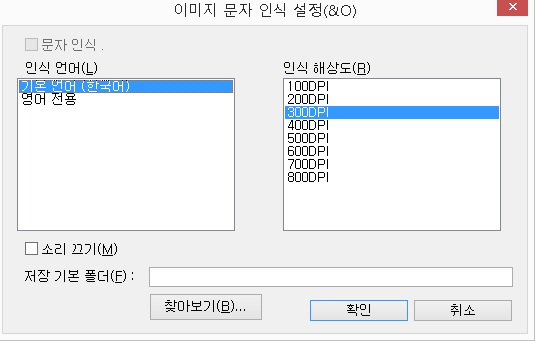

ⅡⅠ-1. 센스 스캐너 소개
센스 스캐너는 휴대폰 카메라나 스캐너등을 이용하여 얻은 이미지를 사용자가 음성으로 확인할 수 있도록 도와주는 센스리더의 구성요소중 하나입니다.
또한 평판 스캐너, ADF(여러장의 문서를 한번에 스캔할 수 있는 스캐너)등을 모두 지원하여 기기에 상관없이 이용할 수 있도록 편의성을 제공 합니다.
스캐너는 제조사에서 제공하는 스캔 프로그램을 활용할 수 있으나 센스 스캐너를 이용하여 간편하게 스캔하므로써 스캔과 동시에 음성으로 들을 수 있어 더욱 편리한 작업 환경을 마련할 수 있습니다.
또한 제조사에서 제공하는 스캔 프로그램과 같이 컬러, 용지, 명도대비등의 설정이 가능하며, 스크린리더로의 접근이 용의하도록 간편한 인터페이스를 지원 합니다.
ⅡⅠ-2. 센스 스캐너 사용방법
센스 스캐너를 실행하기 위해서는 파일이나 폴더에 포커스한 후 팝업키를 눌러 메뉴를 호출해야 합니다.
위의 그림과 같이 "센스리더 문자 인식(S)" 풀다운 메뉴에서 앤터를 누르고 하위 메뉴 중 "스캐너 시작(S)"에서 앤터를 눌러 스캔 설정 대화상자를 호출 합니다.
※ 센스리더 더 넥스트 v5.3버전 이상에서는 <Ctrl + Alt + F8>키나, 파일과 폴더의 선택 없이 빈 폴더 내에서 <팝업>메뉴를 이용한 센스 스캐너의 실행이 가능 합니다.
"설정 대화상자"의 경우 아래에서 자세하게 설명하고 있으며, 기본값으로 스캔을 시작하려면 기능키 "Alt + S"로 스캔을 시작할 수 있습니다.
ⅡⅠ-3. 센스 스캐너 화면 구성
센스 스캐너 설정 대화상자

| 옵션값 | 설명 |
|---|---|
| 이름(N) | 저장되는 파일 이름을 지정할 수 있습니다. 기본적으로 "scan"으로 지정되어 있으며 이름을 변경하고자 할 경우 편집창으로 이동하여 파일 이름을 수정 합니다. |
| 파일 형식(T) | 이미지 파일의 형식을 변경할 수 있는 기능으로 기본 설정값은 "JPG"이며 "GIF", "PNG"등 원하는 이미지 파일 포멧으로 설정할 수 있습니다. 변경을 원하는 경우 탭키로이동 후 상, 하키를 이용하여 콤보상자의 옵션값을 조절할 수 있습니다. |
| 시작 번호(H) | 여러장을 스캔할 때 파일명 뒤에 자동으로 번호를 붙이는 기능으로 지정한 번호에 따라 스캔시 시작 번호가 달라집니다. 시작 번호를 변경하기 위해서는 탭키로 이동하여 해당 편집창에서 숫자를 변경 합니다. |
| 색상(L) | 스캔할 이미지를 "컬러"로 스캔할지 "흑백"으로 스캔할지를 설정할 수 있습니다. 변경을 원할 경우 탭키로 이동하여 상, 하키로 콤보상자의 옵션값을 조절할 수 있습니다. |
| 용지(P) | 스캔할 대상이 "A4"인지 설정하는 기능으로 기본 값은"A4"로 지정되어 있습니다. 변경을 원할 경우 탭키로 이동하여 상, 하키로 콤보상자의 옵션값을 조절할 수 있습니다. |
| 사용자 정의(U) | 용지의 크기를 사용자가 직접 지정할 수 있는 기능으로 기본으로 제공되는 설정값 이외의 용지를 사용할 때 이용 합니다. 변경을 원하는 경우 탭키로 이동한 후 버튼을 실행하여 사용하고자 하는 용지를 선택 합니다. |
| 해상도(R) | 스캔된 결과물을 어떤 해상도로 스캔할지를 설정하는 기능으로 기본 DPI는 "300DPI"입니다. 변경을 원할 경우 탭키로 이동한 후 상, 하키로 콤보상자의 옵션값을 조절할 수 있으며 DPI에 따라 결과물을 얻는 시간의 차이가 있을 수 있습니다. |
| 명도(B) | 명도(Brightness)는 결과물의 밝기를 조절하는 설정값으로 밝게 또는 어둡게 조절할 수 있습니다. 변경을 원할 경우 탭키로 이동하여 좌, 우키로 슬라이드값을 조절할 수 있습니다. |
| 대비(C) | 대비(Contrast)는 음영의 대비를 약화 또는 강화하는 기능으로 빛의 농도를 조절할 수 있습니다. 변경을 원할 경우 탭키로 이동하여 좌, 우키로 슬라이드값을 조절할 수 있습니다. |
| 장치(V) | 스캔이 가능한 장치 목록을 나타내며 해당 목록에 스캐너가 나타나지 않을 경우 스캔은 불가능 합니다. 설정값을 변경하기 위해서는 탭키로 이동한 후 상, 하키로 콤보상자의 옵션값을 조절할 수 있습니다. |
| 연속 스캔(A) | ADF 스캐너를 활용하여 여러장의 이미지를 스캔할 때 사용되며 기본값은 해제되어 있습니다. 만약 연속 스캔을 원할 경우 탭키로 이동하여 스페이스바로 해당 설정값을 선택 합니다. |
| 연속 방법(D) | 위의 연속 스캔기능을 활성화 하였을 때 설정할 수 있는 기능으로 기본값은 "스캔 일시정지 시간 사용"으로지정되어 있습니다. 이 설정을 이용하여 3초단위로 자동 스캔이 이루어질지 사용자가 스캔 버튼을 누를지를 설정할 수 있습니다. 설정값을 변경하고자 할 경우 탭키로 이동하여 상, 하키로 콤보상자의 옵션값을 변경할 수 있습니다. |
| 일시정지 시간(E) | 위의 연속 스캔을 설정한 값에따라 활성화 모드가 달라지며 해당 설정값이 대기시간을 의미합니다. 따라서 "3"초단위를 원할 경우 탭키로 이동하여 값을 변경합니다. |
이미지 문자인식 설정 대화상자
문자 인식 설정(O)는 스캔시 인식할 언어 및 해상도, 저장 폴더를 지정할 수 있으며 설정에 대한 설명은 다음과 같습니다.
또한 더 넥스트 v5.3 이상에서는 <Ctrl + Alt + F7>키를 이용하여 <이미지 문자인식 설정 대화상자>를 실행할 수 있습니다.

| 옵션 | 설명 |
|---|---|
| 인식 언어(L) 목록상자 | 문자인식 모드에서 사용되는 기본 언어를 지정할 수 있으며 기본값은 "한국어"로 설정되어 있습니다. 상, 하키를 이용하여 기본 언어를 변경할 수 있으며 별도의 선택과정은 필요하지 않습니다. |
| 인식 해상도(R) 목록상자 | 문자인식모드에서 사용되는 해상도를 설정할 수 있으며, 기본 해상도는 300DPI로 설정되어 있습니다. 상, 하키를 이용하여 해상도를 변경할 수 있으며 별도의 선택과정은 필요하지 않습니다. |
| 해제 소리 끄기(M) 체크상자 | 문자인식모드를 이용하여 화면을 인식하는 과정 중 발생하는 효과음을 선택 / 해제할 수 있습니다. 스페이스바를 이용하여 선택, 해제가 가능하며, 선택시 효과음은 출력되지 않습니다. |
| 저장 기본 폴더(F) : 편집창 = Alt+f | 스캔시 결과물이 저장될 위치를 사용자가 직접 입력할 수 있는 편집창 입니다. 로컬디스크(D:)에 저장을 원하시는 경우 <D:\>와 같이 입력하면 됩니다. |
| 찾아보기(B)... 대화상자 버튼 = Alt+b | 위의 편집창과 같이 스캔시 결과물을 저장할 폴더를 지정하기 위한 버튼으로 실행시 트리 구조의 폴더 찾아보기 대화상자가 나타납니다. 상, 하, 좌, 우 방향키를 이용하여 원하는 위치에 포커스하고 <확인>버튼을 눌러 지정할 수 있으며, <취소>를 눌러 종료할 수 있습니다. 또한 폴더를 지정하지 않을 경우 기본 폴더로 <로컬디스크(C:)> 내에 <SCAN>폴더에 결과물이 저장 됩니다. |
각각의 설정항목은 <Tab>키를 이용하여 이동할 수 있으며 설정이 완료된 경우 "확인"버튼에서 앤터키를 눌러 설정을 완료하거나, "취소"버튼을 눌러 종료할 수 있습니다.
"스캔 시작(S)"는 설정을 완료한 후 결과물을 얻고자 할때 사용됩니다.
"닫기"는 스캔을 취소하고 대화상자를 닫기위해 사용됩니다.
ⅡⅠ-4. 센스 스캐너 활용하기
센스 스캐너의 설정을 완료 하였거나, 별도의 설정과정 없이 바로 스캔 작업을 진행하고자 할 경우 기능키 'Alt + S'를 눌러 바로 스캔 작업을 진행할 수 있습니다.
위의 그림과 같이 스캔이 시작되면 스캔중 이라는 대화상자가 나타나며, 스캔이 완료되면 자동으로 내용을 음성으로 출력하게 됩니다.
또한 사용자가 직접 내용 확인이 가능하며 탭키를 눌러 읽기전용 편집창으로 이동 후, '상, 하, 좌, 우'방향키등을 통해 내용 확인이 가능 합니다.
여러장의 이미지를 스캔할 경우 위의 그림과 같이 스캔된 목록이 나열되며 목록에서 '상, 하'키를 이용하여 이전에 스캔한 내용과 새로 스캔한 이미지의 내용을 각각 확인할 수 있습니다.
또한 스캔 중 자동으로 음성이 출력되어 이를 중지하고 싶을 경우 탭키를 이용하여 '선택 음성 재생(p) 체크상자'로 이동 후 '스페이스바'를 눌러 해제하면 됩니다.
스캔된 원본 파일은 스캔을 시작한 위치에 'SCAN'이라는 폴더가 생성되며, 해당 폴더로 진입하여 각각의 이미지와 'TXT'파일을 확인 및 관리할 수 있습니다.